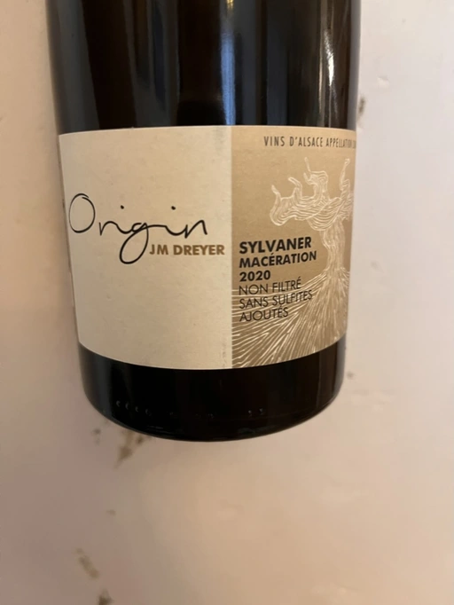
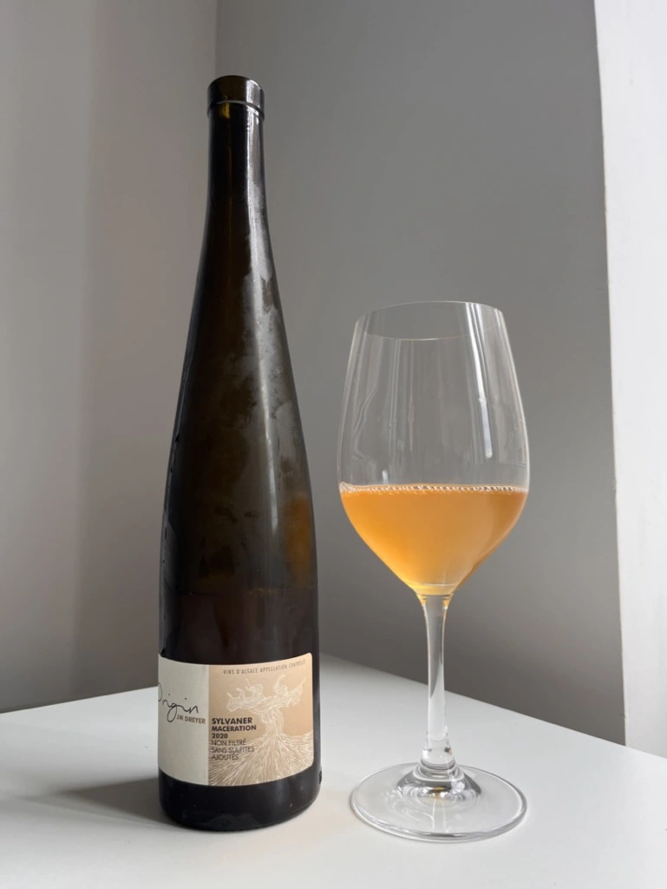

- Type
- White Still, Dry
- Producer
- J.M Dreyer
- Vintage
- 2020
- Location
- France, Alsace AOC
- Grapes
- Silvaner
- Alcohol
- 13
- Sugar
- 1.2
- Price
- 716 UAH
- Cellar
- N/A
Ratings
2022-08-15 - 7.75
This macerated Silvaner is not a blockbuster, yet I believe it to be a good entry-level orange wine. Not crazy, yet it unveils what you can expect from macerated whites - both in terms of the bouquet and the palate. The aroma is subtle and displays rotten apricots, mandarin skin, and dried herbs. The palate is fresh, tannin is present yet not grippy, and well-integrated thanks to short skin contact and longer time in oak. Good price.
